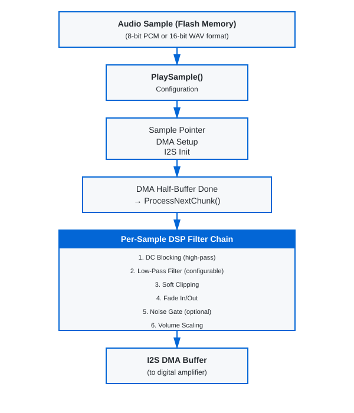

Audio Engine User Manual
Table of Contents
- Overview
- Quick Start
- Architecture
- API Reference
- Filter Configuration
- Playing Audio
- Filter Parameters & Tuning
- Volume Control
- Hardware Integration
- Examples
- Troubleshooting
- Performance Notes
📖 Complete API Reference: See API_REFERENCE.md for detailed documentation of all 64 functions including getters, setters, and control functions.
Overview
The Audio Engine is a reusable, embedded DSP audio playback system designed for STM32 microcontrollers with I2S support (including the STM32G4, STM32F4, STM32H7 series and others) with audio output to digital amplifiers such as the MAX98357A.
Key Features
- Dual Format Support: 8-bit and 16-bit audio playback
- Flexible Modes: Mono and stereo playback
- DSP Filter Chain: Runtime-configurable filters with fixed-point arithmetic
- No FPU Required: All DSP operations use integer math for MCU efficiency
- Sample Rate: Default 22 kHz (configurable)
- DMA-Driven: Efficient I2S streaming with double-buffering
- Low Latency: ~93 ms playback latency with 2048-sample buffer
Core Capabilities
| Feature | Specification |
|---|---|
| Sample Rates | 22 kHz (default), configurable |
| Audio Depths | 8-bit unsigned, 16-bit signed |
| Channels | Mono, Stereo |
| Buffer Size | 2048 samples (ping-pong DMA) |
| Nyquist Frequency | 11 kHz @ 22 kHz sample rate |
| Volume Control | Software configurable (0-3x gain) |
| Fade Effects | In/Out (~93 ms at 22 kHz) |
Quick Start
1. Initialize the Audio Engine
You must call AudioEngine_Init() to set up the audio engine with the required hardware callbacks. This function initializes all filter state and validates that the necessary hardware interface functions are provided:
#include "audio_engine.h"
// Step 1: I2S2 must be initialized via CubeMX
// (This is done automatically in MX_I2S2_Init())
// Step 2: Initialize the audio engine with hardware callbacks
PB_StatusTypeDef status = AudioEngine_Init(
DAC_MasterSwitch, // Function to control amplifier on/off
ReadVolume, // Function to read volume setting
MX_I2S2_Init // Function to re-initialize I2S if needed
);
if( status != PB_Idle ) {
// Handle initialization error
}
// Step 3: Configure filters (optional, defaults are pre-set)
SetLpf16BitLevel(LPF_Soft); // Set filter aggressiveness
SetFilterConfig(&my_filter_config); // Apply complete config
// Audio engine is now ready to play samples
2. Play a 16-bit Audio Sample
// Assuming 'doorbell_sound' is a 16-bit mono WAV sample in flash memory
// 44,100 samples = ~2 seconds @ 22 kHz, 16-bit mono
extern const uint8_t doorbell_sound[];
extern const uint32_t doorbell_sound_size;
PB_StatusTypeDef result = PlaySample(
doorbell_sound, // Pointer to audio data
doorbell_sound_size, // Total samples (all channels combined)
22000, // Sample rate (Hz)
16, // Bit depth (16 = 16-bit)
Mode_stereo // Stereo playback
);
// Wait for playback to complete
WaitForSampleEnd();
3. Configure Filters
// Get current filter configuration
FilterConfig_TypeDef cfg;
GetFilterConfig(&cfg);
// Adjust filter levels
cfg.enable_16bit_biquad_lpf = 1; // Enable 16-bit LPF
cfg.enable_soft_clipping = 1; // Enable soft clipping to prevent distortion
cfg.lpf_16bit_level = LPF_Medium; // Medium filtering strength
// Apply new configuration
SetFilterConfig(&cfg);
// Or use convenience function for LPF level
SetLpf16BitLevel(LPF_Aggressive); // Stronger filtering
// 8-bit path: set a custom LPF alpha and read it back
SetLpf8BitLevel(LPF_Custom);
SetLpf8BitCustomAlpha(CalcLpf8BitAlphaFromCutoff(900.0f, 11025.0f));
uint16_t current_alpha = GetLpf8BitCustomAlpha();
Architecture
System Block Diagram

The audio playback system follows a clear data flow from flash memory through DSP processing to the I2S output. The DMA operates in ping-pong mode, processing audio chunks as they're transmitted, ensuring continuous playback without CPU blocking.
Filter Chain Stages (16-bit Audio)
-
Biquad Low-Pass Filter (Optional - enable_16bit_biquad_lpf) - Second-order IIR filter
- Runtime-configurable aggressiveness: Very Soft → Aggressive
- Warm-up: 16 passes of first sample to prevent startup artefacts
- Cutoff range (22 kHz fs, approx): ~2.6 kHz (Very Soft), ~1.4 kHz (Soft), ~0.9 kHz (Medium), ~0.2 kHz (Aggressive)
- 64-bit accumulator in the biquad path to prevent overflow with aggressive settings
-
DC Blocking Filter (Selectable - enable_soft_dc_filter_16bit) - Removes DC offset and very low frequencies - Two variants: standard (44 Hz) or soft (22 Hz) - Prevents output drift - Always active in one of the two modes
-
Air Effect (High-Shelf) (Optional - enable_air_effect) - Adds presence and brightness to audio - Runtime-adjustable boost (+1 dB, +2 dB, +3 dB presets) - Disabled by default
-
Fade In/Out (Enabled by default) - Quadratic power curve ramp - Default: 2048 samples (~93 ms @ 22 kHz) - Smooth entry/exit for audio transitions - Can be disabled via
SetFadersEnabled(0)if needed -
Noise Gate (Optional - enable_noise_gate) - Mutes samples below ±512 amplitude - Suppresses quantization noise during silence - Disabled by default
-
Soft Clipping (Optional - enable_soft_clipping) - Smooth cubic curve limiting above ±28,000 - Prevents harsh digital clipping - Musical, natural-sounding compression - Recommended: keep enabled
-
Volume Scaling (Always Active) - Integer multiplication (0–3x gain) - Read from hardware GPIO (3-level selector) - Applied per-sample
Filter Chain Stages (8-bit Audio)
-
8-bit to 16-bit Conversion with Dithering (Always Active) - TPDF (Triangular PDF) dithering reduces quantization noise - Upsamples to internal 16-bit working format
-
One-Pole Low-Pass Filter (Optional - enable_8bit_lpf) - One-pole IIR (alpha range: 0.625 to 0.9375) - Separate aggressiveness levels for 8-bit audio - Custom alpha supported via
SetLpf8BitCustomAlpha()andCalcLpf8BitAlphaFromCutoff()- Current custom alpha can be read withGetLpf8BitCustomAlpha() -
Makeup Gain (Always Active when LPF enabled) - Post-LPF amplitude compensation (~1.08x default) - Configurable via
SetLpfMakeupGain8Bit() -
DC Blocking & Remaining Stages - Same as 16-bit path (steps 2–7) - Air Effect, Fade, Noise Gate, Soft Clipping, Volume Scaling
API Reference
Enumeration Types
PB_StatusTypeDef
Audio playback state enumeration.
typedef enum {
PB_Idle, // No audio playing
PB_Error, // Error during playback
PB_Playing, // Audio actively playing
PB_Pausing, // Fade-out in progress (pause or stop)
PB_Paused, // Playback paused
PB_PlayingFailed // Playback failed to start
} PB_StatusTypeDef;
PB_ModeTypeDef
Playback channel mode.
typedef enum {
Mode_stereo, // Stereo (2-channel) playback
Mode_mono // Mono (single-channel) playback
} PB_ModeTypeDef;
LPF_Level
Low-pass filter aggressiveness level for 16-bit and 8-bit LPFs.
typedef enum {
LPF_Off, // Filtering disabled
LPF_VerySoft, // Minimal filtering (α = 0.625)
LPF_Soft, // Gentle filtering (α ≈ 0.80)
LPF_Medium, // Balanced filtering (α = 0.875)
LPF_Firm, // Firm filtering (α ≈ 0.92)
LPF_Aggressive, // Strong filtering (α ≈ 0.97)
LPF_Custom // Use custom alpha (SetLpf16BitCustomAlpha or SetLpf8BitCustomAlpha)
} LPF_Level;
Structure Types
FilterConfig_TypeDef
Runtime filter configuration structure.
typedef struct {
uint8_t enable_16bit_biquad_lpf; // Enable/disable 16-bit biquad LPF
uint8_t enable_soft_dc_filter_16bit; // Use softer DC blocking (22 Hz vs 44 Hz)
uint8_t enable_8bit_lpf; // Enable/disable 8-bit one-pole LPF
uint8_t enable_noise_gate; // Enable/disable noise gate
uint8_t enable_soft_clipping; // Enable/disable soft clipping
uint8_t enable_air_effect; // Enable/disable air effect
uint32_t lpf_makeup_gain_q16; // Post-LPF gain in Q16 fixed-point
uint32_t lpf_makeup_gain_16bit_q16; // Post-16-bit LPF gain in Q16 fixed-point
LPF_Level lpf_16bit_level; // 16-bit LPF aggressiveness
uint16_t lpf_16bit_custom_alpha; // Custom alpha for 16-bit LPF
LPF_Level lpf_8bit_level; // 8-bit LPF aggressiveness
uint16_t lpf_8bit_custom_alpha; // Custom alpha for 8-bit LPF
uint8_t enable_filter_chain_16bit; // Master enable for entire 16-bit filter chain
uint8_t enable_filter_chain_8bit; // Master enable for entire 8-bit filter chain
} FilterConfig_TypeDef;
Field Descriptions:
- lpf_makeup_gain_q16: Gain value in Q16 format (65536 = 1.0x). Default: 70779 (~1.08x)
- lpf_16bit_level: Filter aggressiveness affects cutoff frequency and stop-band attenuation
- lpf_16bit_custom_alpha: Custom alpha used when lpf_16bit_level = LPF_Custom
- lpf_8bit_level: Filter aggressiveness for the 8-bit one-pole LPF
- lpf_8bit_custom_alpha: Custom alpha used when lpf_8bit_level = LPF_Custom
AudioEngine_HandleTypeDef
Audio engine state handle (for initialization).
typedef struct {
I2S_HandleTypeDef *hi2s; // Pointer to I2S HAL handle
int16_t *pb_buffer; // Playback buffer (2048 samples)
uint32_t playback_speed; // Default playback speed (Hz)
} AudioEngine_HandleTypeDef;
Function Reference
Hardware Setup (Done in CubeMX + main.c)
Before playing audio, ensure:
1. I2S2 is configured in CubeMX (22 kHz, 16-bit, DMA enabled)
2. AudioEngine_Init() is called with function pointers for:
- DAC on/off control
- Volume reading
- I2S re-initialization
3. Filters are configured to desired settings (optional; defaults are applied by AudioEngine_Init())
Calling AudioEngine_Init() is required before any audio playback. It initializes the filter state, validates hardware callbacks, and sets up default filter configuration.
Playback Control
AudioEngine_Init()
Initialize the audio engine with required hardware callbacks.
PB_StatusTypeDef AudioEngine_Init(
DAC_SwitchFunc dac_switch,
ReadVolumeFunc read_volume,
I2S_InitFunc i2s_init
);
Parameters:
- dac_switch: Function pointer for controlling amplifier on/off (GPIO control)
- read_volume: Function pointer for reading current volume level
- i2s_init: Function pointer for I2S peripheral re-initialization
Returns:
- PB_Idle if initialization successful
- PB_Error if any function pointer is NULL
Important Notes:
- Must be called once before any call to PlaySample() or other playback functions
- Initializes all filter state variables and resets playback status
- Sets up default filter configuration (can be overridden with SetFilterConfig())
- Validates that all required hardware callbacks are provided
- Does not start audio playback itself
Example:
#include "audio_engine.h"
// Define these functions in your application
void DAC_MasterSwitch(uint8_t state) {
if (state) {
HAL_GPIO_WritePin(GPIOC, GPIO_PIN_0, GPIO_PIN_SET); // Enable amplifier
} else {
HAL_GPIO_WritePin(GPIOC, GPIO_PIN_0, GPIO_PIN_RESET); // Disable amplifier
}
}
uint16_t ReadVolume(void) {
// Return volume level 1-65535
return volume_setting;
}
// In main.c initialization:
PB_StatusTypeDef status = AudioEngine_Init(
DAC_MasterSwitch,
ReadVolume,
MX_I2S2_Init
);
if (status != PB_Idle) {
printf("Audio engine initialization failed!\n");
return;
}
// Now safe to call PlaySample()
PlaySample()
Start playback of an audio sample.
PB_StatusTypeDef PlaySample(
const void *sample_to_play,
uint32_t sample_set_sz,
uint32_t playback_speed,
uint8_t sample_depth,
PB_ModeTypeDef mode
);
Parameters:
- sample_to_play: Pointer to audio data in flash/RAM
- sample_set_sz: Total samples (all channels combined)
- playback_speed: Sample rate in Hz (typically 22000)
- sample_depth: 8 or 16 (bits per sample)
- mode: Mode_mono or Mode_stereo
Returns:
- PB_Playing if playback started successfully
- PB_Error or PB_PlayingFailed on error
Important Notes:
- Audio data is accessed in real-time during playback (must be in accessible memory)
- DMA directly reads from the provided buffer
- For 16-bit mono audio: sample_set_sz = num_samples
- For 16-bit stereo (interleaved): sample_set_sz = 2 * num_frames
- For 8-bit mono audio: sample_set_sz = num_samples
- For 8-bit stereo (interleaved): sample_set_sz = 2 * num_frames
- Blocks briefly while starting DMA
- Configure filters separately with SetLpf16BitLevel() or SetFilterConfig()
Example:
extern const uint8_t alert_sound_16bit_mono[];
extern const uint32_t alert_sound_16bit_mono_size;
SetLpf16BitLevel(LPF_Medium); // Medium filtering
PB_StatusTypeDef result = PlaySample(
alert_sound_16bit_mono,
alert_sound_16bit_mono_size,
22000, // Sample rate
16, // 16-bit
Mode_mono
);
if (result != PB_Playing) {
// Handle error
printf("Playback failed: %d\n", result);
}
WaitForSampleEnd()
Block until audio playback completes.
PB_StatusTypeDef WaitForSampleEnd(void);
Returns:
- PB_Idle when playback finishes
- PB_Error if playback was interrupted
Example:
SetLpf16BitLevel(LPF_Soft);
PlaySample(my_sound, my_sound_size, 22000, 16, Mode_mono);
WaitForSampleEnd(); // Wait until done
printf("Playback complete\n");
PausePlayback()
Pause ongoing playback (can resume later) with smooth fade-out.
PB_StatusTypeDef PausePlayback(void);
Returns:
- PB_Paused on success
- PB_Idle if no audio was playing
Notes:
- Pause fadeout duration set by SetPauseFadeTime()
- Intelligently handles edge cases to prevent audible artefacts:
- Pausing during fade-in: Scales pause fadeout proportionally to start from current volume
- Pausing during end-of-file fadeout: Scales pause fadeout to maintain smooth volume continuity
- All transitions use quadratic volume curves for smooth audio
Example:
if (user_pressed_pause_button) {
PausePlayback();
}
ResumePlayback()
Resume previously paused audio with smooth fade-in.
PB_StatusTypeDef ResumePlayback(void);
Returns:
- PB_Playing on success
- PB_Idle if no paused audio
Notes:
- Resume fadein duration set by SetResumeFadeTime()
- Audio fades in smoothly from silence using a quadratic volume curve
- Playback resumes from the exact position where it was paused
Example:
if (user_pressed_play_button && prev_state == PB_Paused) {
ResumePlayback();
}
Filter Configuration
SetFilterConfig()
Apply a complete filter configuration.
void SetFilterConfig(const FilterConfig_TypeDef *cfg);
Parameters:
- cfg: Pointer to filter configuration structure
Example:
FilterConfig_TypeDef cfg = {
.enable_16bit_biquad_lpf = 1,
.enable_soft_dc_filter_16bit = 1,
.enable_8bit_lpf = 1,
.enable_noise_gate = 0,
.enable_soft_clipping = 1,
.enable_air_effect = 0,
.lpf_makeup_gain_q16 = 70779,
.lpf_16bit_level = LPF_Medium,
.lpf_16bit_custom_alpha = LPF_16BIT_MEDIUM,
.lpf_8bit_level = LPF_Medium,
.lpf_8bit_custom_alpha = LPF_MEDIUM
};
SetFilterConfig(&cfg);
GetFilterConfig()
Read current filter configuration.
void GetFilterConfig(FilterConfig_TypeDef *cfg);
Example:
FilterConfig_TypeDef cfg;
GetFilterConfig(&cfg);
printf("LPF Level: %d\n", cfg.lpf_16bit_level);
SetLpf16BitLevel()
Change 16-bit LPF aggressiveness (convenience function).
void SetLpf16BitLevel(LPF_Level level);
Parameters:
- level: LPF_VerySoft, LPF_Soft, LPF_Medium, LPF_Firm, or LPF_Aggressive
Example:
SetLpf16BitLevel(LPF_Aggressive); // Strong filtering
SetLpf8BitCustomAlpha()
Set custom alpha for the 8-bit one-pole LPF.
void SetLpf8BitCustomAlpha(uint16_t alpha);
Example:
SetLpf8BitLevel(LPF_Custom);
SetLpf8BitCustomAlpha(LPF_MEDIUM);
GetLpf8BitCustomAlpha()
Read the current 8-bit LPF custom alpha value.
uint16_t GetLpf8BitCustomAlpha(void);
CalcLpf8BitAlphaFromCutoff()
Compute 8-bit LPF alpha from cutoff and sample rate.
uint16_t CalcLpf8BitAlphaFromCutoff(float cutoff_hz, float sample_rate_hz);
Example:
uint16_t alpha = CalcLpf8BitAlphaFromCutoff(4500.0f, 11000.0f);
SetLpf8BitLevel(LPF_Custom);
SetLpf8BitCustomAlpha(alpha);
SetLpfMakeupGain8Bit()
Set post-LPF gain for 8-bit audio.
void SetLpfMakeupGain8Bit(float gain);
Parameters:
- gain: Gain multiplier (e.g., 1.0 = no change, 1.08 = +8%)
Example:
SetLpfMakeupGain8Bit(1.15f); // Boost 8-bit audio by 15%
Status Accessors
GetPlaybackState()
Query current playback state (for non-blocking polling).
PB_StatusTypeDef GetPlaybackState(void);
Returns:
- PB_Idle, PB_Playing, PB_Pausing, PB_Paused, PB_Error, PB_PlayingFailed
Example:
if (GetPlaybackState() == PB_Playing) {
printf("Audio is playing...\n");
}
GetPlaybackSpeed()
Get current sample rate.
uint32_t GetPlaybackSpeed(void);
GetPlaybackProgressSamples()
Get playback progress in interleaved source samples.
uint32_t GetPlaybackProgressSamples(void);
GetPlaybackProgressPercent()
Get playback progress as a percentage (0.0f to 100.0f).
float GetPlaybackProgressPercent(void);
Hardware Integration Functions
These must be defined by the application to integrate the audio engine with your specific hardware.
AudioEngine_DACSwitch()
Function pointer to control amplifier GPIO (on/off).
extern DAC_SwitchFunc AudioEngine_DACSwitch;
// Application must define:
void MyDACControl(GPIO_PinState setting) {
if (setting == GPIO_PIN_SET) {
HAL_GPIO_WritePin(AMP_EN_GPIO_Port, AMP_EN_Pin, GPIO_PIN_SET); // ON
} else {
HAL_GPIO_WritePin(AMP_EN_GPIO_Port, AMP_EN_Pin, GPIO_PIN_RESET); // OFF
}
}
// In initialization:
AudioEngine_DACSwitch = MyDACControl;
AudioEngine_ReadVolume()
Function pointer to read volume setting (0–65535). Raw values are scaled as gain during playback. 0 is treated as 1 for minimum volume. Values are subject to the configured volume response curve (linear by default, or non-linear gamma curve if enabled).
extern ReadVolumeFunc AudioEngine_ReadVolume;
// Application must define:
uint16_t MyReadVolume(void) {
// Read GPIO pins or ADC to determine volume level (0–65535)
uint16_t volume = ReadMyVolumeSource();
return volume ? volume : 1; // Treat 0 as 1 for minimum volume
}
// In initialization:
AudioEngine_ReadVolume = MyReadVolume;
// Optionally configure volume response curve:
SetVolumeResponseNonlinear(1); // Enable non-linear response (default)
SetVolumeResponseGamma(2.0f); // Set gamma exponent (1.0–4.0)
AudioEngine_I2SInit()
Function pointer to re-initialize I2S if needed (called after pause/resume).
extern I2S_InitFunc AudioEngine_I2SInit;
// Application must define:
void MyI2SInit(void) {
MX_I2S2_Init(); // STM32CubeMX-generated initialization
}
// In initialization:
AudioEngine_I2SInit = MyI2SInit;
DMA Callbacks
Connect these to your I2S DMA interrupt handlers:
// In your I2S interrupt service routine:
void HAL_I2S_TxHalfCpltCallback(I2S_HandleTypeDef *hi2s) {
// Called when first half of DMA buffer is transmitted
// Audio engine processes next chunk
}
void HAL_I2S_TxCpltCallback(I2S_HandleTypeDef *hi2s) {
// Called when second half of DMA buffer is transmitted
}
The audio engine provides these implementations that will be called automatically.
Interrupt Priority Note: With the default setting (AUDIO_ENGINE_CUSTOM_HAL_DELAY=1), the audio engine uses an interrupt-independent HAL_Delay() override and is less dependent on SysTick preemption. If you disable it (AUDIO_ENGINE_CUSTOM_HAL_DELAY=0), HAL stop routines use tick-based timeouts again; in that case, ensure SysTick has higher priority (numerically lower) than the I2S DMA IRQ to avoid stalls. See Core/Inc/stm32g4xx_hal_conf.h for TICK_INT_PRIORITY and Core/Src/main.c for DMA IRQ priority setup.
Filter Configuration
16-bit LPF Aggressiveness Levels
The 16-bit biquad uses lower α for heavier filtering (same direction as the 8-bit one-pole). The coefficient formula b0 = ((65536 - alpha) * (65536 - alpha)) >> 17 means lower alpha values result in more aggressive low-pass filtering.
| Level | Alpha | Notes |
|---|---|---|
| Very Soft | 0.625 | Minimal filtering / brightest tone / highest cutoff |
| Soft | ~0.80 | Gentle filtering |
| Medium | 0.875 | Balanced filtering |
| Firm | ~0.92 | Firm filtering / lower cutoff |
| Aggressive | ~0.97 | Strongest filtering / darkest tone / lowest cutoff |
- Warm-up (16 passes) still runs to suppress startup artefacts at the most aggressive setting.
Recommended Input Range for Best Quality:
The 16-bit biquad has feedback that can cause overshoot and ringing, especially at aggressive filter levels. To avoid clipping while preserving dynamic range:
| Level | Recommended Range | Notes |
|---|---|---|
| LPF_VerySoft | 75–85% of full scale (±24,500 to ±27,750) | Minimal overshoot risk |
| LPF_Soft | 70–80% of full scale (±22,937 to ±26,214) | Good balance (recommended) |
| LPF_Medium | 70–75% of full scale (±22,937 to ±24,500) | Increasing feedback |
| LPF_Firm | 65–75% of full scale (+/-21,300 to +/-24,500) | Stronger feedback; moderate headroom |
| LPF_Aggressive | 60–70% of full scale (±19,660 to ±22,937) | Strong feedback; conservative headroom essential |
General Guideline:
Use 70–80% of full scale (±23,000) as a safe starting point. If using LPF_Aggressive, stay closer to 70%; if using LPF_VerySoft, you can push toward 80–85%.
8-bit LPF Aggressiveness Levels
8-bit audio uses a first-order (one-pole) filter rather than a biquad. This architecture avoids feedback loop instability on quantized 8-bit data. As a result, the alpha range is narrower than the 16-bit biquad to maintain filter stability.
Filter Architecture:
- One-pole formula: output = (α × input + (1 − α) × prev_output) × makeup_gain
- Why narrower range: One-pole filters at low alpha (high filtering) can amplify quantization noise; biquads are more robust to this.
| Level | Alpha | Cutoff Freq |
|---|---|---|
| Very Soft | 0.9375 | ~3200 Hz |
| Soft | 0.875 | ~2800 Hz |
| Medium | 0.75 | ~2300 Hz |
| Firm | 0.6875 | ~2000 Hz |
| Aggressive | 0.625 | ~1800 Hz |
Note on Range Differences:
The 16-bit biquad (α: 0.625 → 0.97) and 8-bit one-pole (α: 0.625 → 0.9375) do not span the same range. This is intentional: the biquad's wider range is safe for 16-bit data, while the one-pole's narrower range prevents instability on 8-bit input. Both filters provide LPF_VerySoft, LPF_Soft, LPF_Medium, LPF_Firm, and LPF_Aggressive presets for user consistency, but their underlying coefficients differ.
Important: The two filter types have the same relationship between alpha and filtering: lower alpha = more filtering for both architectures. The biquad coefficient formula uses (65536 - alpha), which inverts the typical relationship.
DC Blocking Filter
Removes DC offset and very low frequencies.
| Variant | Alpha | Cutoff Freq | Use |
|---|---|---|---|
| Standard | 0.98 | ~44 Hz | Normal playback |
| Soft | 0.995 | ~22 Hz | Gentler high-pass (use if ultra-low audio needed) |
When to Enable enable_soft_dc_filter_16bit:
- Music with extended bass (< 44 Hz content)
- Subwoofer testing
- Normally leave disabled for typical speech/alerts
Soft Clipping Threshold
Soft clipping prevents harsh digital distortion when audio peaks exceed a threshold.
Configuration: - Threshold: ±28,000 (85% of ±32,767 full scale) - Curve: Cubic smoothstep (s(x) = 3x² - 2x³) - Benefit: Musical, transparent limiting
When to Enable: - Always recommended (prevents clipping artefacts) - Disable only if maximum undistorted headroom needed
Air Effect (High-Shelf Brightening Filter)
The Air Effect is an optional high-shelf filter that adds presence and brightness to audio by boosting high-frequency content. It uses a simple one-pole shelving architecture for CPU efficiency.
Configuration (defaults):
- Type: High-shelf one-pole filter
- Shelf Gain (Q16): 98304 (~1.5×, ≈ +1.6 dB at Nyquist for α=0.75)
- Shelf Gain Max (Q16): 131072 (2.0× cap to avoid harshness)
- Cutoff Alpha: 0.75 (~5–6 kHz shelving frequency @ 22 kHz)
- Default State: Disabled (enable_air_effect = 0)
Runtime Control (dB or Q16):
- SetAirEffectGainDb(float db): set target HF boost in dB (computes Q16 internally, clamped to max)
- GetAirEffectGainDb(void): read current boost in dB
- SetAirEffectGainQ16(uint32_t gain_q16): set raw Q16 shelf gain (clamped)
- GetAirEffectGainQ16(void): read raw Q16 shelf gain
- Presets (built-in): {+1 dB, +2 dB, +3 dB} with helpers:
- SetAirEffectPresetDb(uint8_t preset_index)
- CycleAirEffectPresetDb(void)
- GetAirEffectPresetIndex/Count/GetAirEffectPresetDb
Filter Characteristics: The Air Effect works by separating high-frequency content and amplifying it:
- Extract high-frequency component:
high_freq = input - prev_input - Amplify high frequencies:
boost = high_freq × (1 − α) × shelf_gain - Blend with smoothed output:
output = (α × input) + ((1 − α) × prev_output) + boost
When to Enable: - Muffled or dark-sounding samples → adds clarity and presence - Quiet samples → adds energy and perceived loudness - Archived audio → brightens aged or compressed recordings - Do not enable if audio already sounds bright or harsh (risk of harshness)
Typical Use Case:
// Enable Air Effect and choose +2 dB preset
SetAirEffectPresetDb(2); // preset 0=off, 1=+1dB, 2=+2dB, 3=+3dB
// (Auto-disables if preset=0, auto-enables if preset>0)
SetLpf16BitLevel(LPF_Soft);
PlaySample(
muffled_doorbell,
sample_size,
22000,
16,
Mode_mono
);
// Adjust live (e.g., button/UART):
CycleAirEffectPresetDb();
Filter Chain Order:
The Air Effect is positioned after the DC blocking filter but before fade/clipping effects:
16/8-bit LPF (optional: enable_16bit_biquad_lpf / enable_8bit_lpf)
↓
DC Blocking Filter (always on: standard or soft mode)
↓
AIR EFFECT (optional: enable_air_effect)
↓
Fade In/Out (always active)
↓
Noise Gate (optional: enable_noise_gate)
↓
Soft Clipping (optional: enable_soft_clipping, recommended)
↓
Volume Scaling (always active)
Tuning the Effect:
- For subtle brightening: use
SetAirEffectGainDb(1.0f)orSetAirEffectPresetDb(1)(+1 dB). - For more sparkle: use
SetAirEffectGainDb(2.0f)orSetAirEffectPresetDb(2)(+2 dB). - For stronger presence:
SetAirEffectGainDb(3.0f)or preset 3 (+3 dB). - For a subtle lift:
SetAirEffectGainDb(0.0f)(flat) or reduce gain below 0 dB if adding presence elsewhere. - For different sample rates (e.g., 48 kHz), raise
AIR_EFFECT_CUTOFF(higher α) to keep the shelf in the upper band.
Playing Audio
Basic Playback Workflow
#include "audio_engine.h"
// 1. Startup (once during initialization, e.g., in main.c)
static void AudioEngine_Init(void) {
// Wire hardware hooks
AudioEngine_DACSwitch = DAC_MasterSwitch;
AudioEngine_ReadVolume = ReadVolume;
AudioEngine_I2SInit = MX_I2S2_Init;
// Configure filters
FilterConfig_TypeDef cfg = filter_cfg; // start from defaults
cfg.enable_16bit_biquad_lpf = 0;
cfg.enable_8bit_lpf = 1;
cfg.enable_soft_dc_filter_16bit = 0;
cfg.enable_soft_clipping = 1;
SetFilterConfig(&cfg);
// Optional tuning
SetLpf16BitLevel(LPF_Soft);
SetAirEffectPresetDb(2); // +2 dB preset (auto-enables air effect)
}
// 2. Play an audio sample
static void PlayAlert(void) {
extern const uint8_t alert_16bit_mono[];
extern const uint32_t alert_16bit_mono_size;
PB_StatusTypeDef result = PlaySample(
alert_16bit_mono,
alert_16bit_mono_size,
22000, // Sample rate
16, // 16-bit depth
Mode_mono // Mono playback
);
if (result == PB_Playing) {
WaitForSampleEnd();
}
}
// 3. Non-blocking playback
static void PlayAlertNonBlocking(void) {
PlaySample(alert_16bit_mono, alert_16bit_mono_size, 22000, 16, Mode_mono);
// Returns immediately; playback happens in background
}
static void CheckPlaybackStatus(void) {
if (GetPlaybackState() == PB_Playing) {
printf("Still playing...\n");
} else {
printf("Playback finished\n");
}
}
Multi-Sample Playback Sequence
void PlayDoorbell(void) {
// First: chime sound (16-bit, gentle filtering)
SetLpf16BitLevel(LPF_Soft);
PlaySample(chime_16bit, chime_size, 22000, 16, Mode_mono);
WaitForSampleEnd();
// Small delay between sounds
HAL_Delay(500);
// Second: bell sound (16-bit, medium filtering)
SetLpf16BitLevel(LPF_Medium);
PlaySample(bell_16bit, bell_size, 22000, 16, Mode_mono);
WaitForSampleEnd();
printf("Doorbell sequence complete\n");
}
Adjusting Playback on the Fly
void InteractivePlayback(void) {
// Start playback with default settings
SetLpf16BitLevel(LPF_Medium);
PlaySample(my_audio, my_audio_size, 22000, 16, Mode_mono);
while (GetPlaybackState() == PB_Playing) {
// Monitor user input
if (user_pressed_filter_button) {
// Change filter level mid-playback
SetLpf16BitLevel(LPF_Aggressive);
}
if (user_pressed_pause_button) {
PausePlayback();
}
if (user_pressed_resume_button) {
ResumePlayback();
}
HAL_Delay(100);
}
}
Filter Parameters & Tuning
Understanding Alpha Coefficients
All filters in the audio engine use first-order or second-order IIR (infinite impulse response) filters with feedback coefficient α (alpha).
First-Order Filter:
y[n] = α · x[n-1] + (1 - α) · y[n-1]
- α close to 1.0: Less filtering (high frequencies pass through)
- α close to 0.0: More filtering (stronger attenuation)
Biquad (Second-Order) Filter:
y[n] = b0·x[n] + b1·x[n-1] + b2·x[n-2] - a1·y[n-1] - a2·y[n-2]
Where coefficients are derived from α: - b0 = ((1 - α)² ) / 2 - b1 = 2 · b0 - b2 = b0 - a1 = -2 · α - a2 = α²
Warm-Up Behavior
Problem: With aggressive filtering (α = 0.625), the first playback sample causes a brief "cracking" sound due to the filter initializing from zero state.
Solution: Configurable Warm-Up (Default: 16 passes)
- Automatically invoked when playing 16-bit audio with enabled LPF
- Feeds the first audio sample through the biquad filter BIQUAD_WARMUP_CYCLES times on each channel (default: 16)
- Allows filter state to converge smoothly before DMA streaming starts
- Result: Eliminates startup transient artefacts
Configuration:
The warm-up behavior can be adjusted by changing the BIQUAD_WARMUP_CYCLES define in audio_engine.h:
#define BIQUAD_WARMUP_CYCLES 16 // Default: 16 passes (was 8)
Code Example (from audio_engine.c):
if (sample_depth == 16 && filter_cfg.enable_16bit_biquad_lpf) {
int16_t first_sample = *((int16_t *)sample_to_play);
// Run BIQUAD_WARMUP_CYCLES passes to let filter state settle
for (uint8_t i = 0; i < BIQUAD_WARMUP_CYCLES; i++) {
ApplyLowPassFilter16Bit(first_sample,
&lpf_16bit_x1_left, &lpf_16bit_x2_left,
&lpf_16bit_y1_left, &lpf_16bit_y2_left);
ApplyLowPassFilter16Bit(first_sample,
&lpf_16bit_x1_right, &lpf_16bit_x2_right,
&lpf_16bit_y1_right, &lpf_16bit_y2_right);
}
}
Q16 Fixed-Point Arithmetic
All filter coefficients and gains use Q16 fixed-point representation:
Q16 Value = Integer Value × 65536
Example: 1.0 = 65536 (0x10000)
0.5 = 32768 (0x8000)
1.08 ≈ 70779
Advantages: - No floating-point hardware required (faster on MCU) - Deterministic, no rounding surprises - Easy to implement in assembly if needed
Converting Gain to Q16:
float gain = 1.08;
uint32_t gain_q16 = (uint32_t)(gain * 65536.0f); // 70779
SetLpfMakeupGain8Bit(gain); // Convenience function
Tuning Guide
For Speech/Alert Sounds
FilterConfig_TypeDef cfg = {
.enable_16bit_biquad_lpf = 1,
.enable_soft_dc_filter_16bit = 0, // Not needed for speech
.enable_8bit_lpf = 1,
.enable_noise_gate = 0, // Or 1 if background noise
.enable_soft_clipping = 1,
.lpf_makeup_gain_q16 = 70779, // 1.08x
.lpf_16bit_level = LPF_Soft // Gentle, preserve clarity
};
SetFilterConfig(&cfg);
For Bass-Heavy Music
FilterConfig_TypeDef cfg = {
.enable_16bit_biquad_lpf = 1,
.enable_soft_dc_filter_16bit = 1, // Preserve low bass
.enable_8bit_lpf = 1,
.enable_noise_gate = 0,
.enable_soft_clipping = 1,
.lpf_makeup_gain_q16 = 65536, // 1.0x (no boost)
.lpf_16bit_level = LPF_VerySoft // Minimal filtering
};
SetFilterConfig(&cfg);
For Noisy Environments
FilterConfig_TypeDef cfg = {
.enable_16bit_biquad_lpf = 1,
.enable_soft_dc_filter_16bit = 0,
.enable_8bit_lpf = 1,
.enable_noise_gate = 1, // Suppress low-level noise
.enable_soft_clipping = 1,
.lpf_makeup_gain_q16 = 70779,
.lpf_16bit_level = LPF_Medium // Balanced noise reduction
};
SetFilterConfig(&cfg);
Volume Control
Overview
The audio engine applies volume scaling during sample processing. Your application provides the volume input by implementing a custom ReadVolume() function that returns a uint16_t value in the range 1–65535.
You can implement this function using various input methods: - Digital GPIO inputs (OPT1–OPT3 pins for 3-bit binary encoding) — example pattern provided below - Analog ADC input (12-bit potentiometer or variable resistance) — example pattern provided below - Other methods (CAN bus, UART commands, network, etc.) — follow the same scaling approach
All implementations support non-linear (logarithmic) volume response to match human hearing perception.
Non-Linear Volume Response
Human hearing perceives loudness logarithmically, not linearly. The audio engine provides a configurable gamma-curve response.
Enable in main.h:
#define VOLUME_RESPONSE_NONLINEAR // Enable non-linear curve
#define VOLUME_RESPONSE_GAMMA 2.0f // Gamma exponent (typical value)
How it works:
- Linear input (1–65535) is normalized to 0.0–1.0
- Gamma curve is applied: output = input^(1/gamma)
- Result scales back to 1–65535 for audio attenuation
Gamma Values: | Gamma | Perception | Use Case | |-------|-----------|----------| | 1.0 | Linear | Reference (no curve) | | 2.0 | Quadratic (recommended) | Most intuitive for human control | | 2.5 | Stronger curve | Aggressive low-volume response |
With gamma = 2.0 (quadratic): - Low volumes (0–50%): Small slider movement → big loudness change - High volumes (50–100%): Big slider movement → small loudness change - Result: More intuitive volume "feel" matching human perception
To disable and use linear scaling:
//#define VOLUME_RESPONSE_NONLINEAR // Comment this out
Volume Control Implementation
Note: Volume input implementation is application-specific. The audio engine simply invokes the
ReadVolume()callback and expects a uint16_t value in the range 1–65535. The application is responsible for: - Choosing the volume input method (digital GPIO, ADC potentiometer, CAN bus, UART command, etc.) - Scaling that input to the 1–65535 range - Handling debouncing, hysteresis, or other input conditioning - Being aware that ifVOLUME_RESPONSE_NONLINEARis enabled, the engine applies a gamma curve to the returned value
Application Example: Digital GPIO Volume Control
3-bit binary selector example (shows the pattern for application developers):
| Selection | Binary | Scaled to 1–65535 |
|---|---|---|
| Maximum | 0b000 | 65535 |
| 75% | 0b001 | 49151 |
| 50% | 0b010 | 32767 |
| ... | ... | ... |
| Minimum | 0b111 | 1 |
Example implementation in application (main.c):
uint16_t ReadVolume(void) {
// Application reads three GPIO pins for volume
uint8_t v =
( ( (OPT3_GPIO_Port->IDR & OPT3_Pin) != 0 ) << 2 ) |
( ( (OPT2_GPIO_Port->IDR & OPT2_Pin) != 0 ) << 1 ) |
( ( (OPT1_GPIO_Port->IDR & OPT1_Pin) != 0 ) << 0 );
v = 7 - v; // Invert so 0b000 = max volume
uint32_t scaled = ( (uint32_t)v * 65535U ) / 7U; // Map 0–7 to 1–65535
return (uint16_t)scaled;
}
Application Example: Analog ADC Volume Control
Potentiometer example (shows the pattern for application developers):
Example implementation in application (main.c):
uint16_t ReadVolume(void) {
// Application reads 12-bit ADC (0–4095)
// Scale to 1–65535 range
uint32_t lin = ((uint32_t)adc_raw * 65535U) / 4095U;
return (uint16_t)lin;
}
void HAL_ADC_ConvCpltCallback( ADC_HandleTypeDef *hadc )
{
if( hadc == &hadc1 ) {
adc_raw = HAL_ADC_GetValue( &hadc1 );
}
}
Hardware Integration
STM32CubeMX Configuration
-
I2S Setup (e.g., I2S2 or other available I2S peripheral): - Mode: Master Transmit Only - Sample Rate: 22000 Hz - Data Format: 16-bit, Mono or Stereo - DMA: Enable DMA for I2Sxext_TX (or similar based on board)
-
DMA Configuration: - Mode: Circular - Word Width: Word (32-bit) - Enable both Half-Transfer Complete and Transfer Complete interrupts
-
GPIO: - Amplifier enable pin (e.g., PE7 on STM32G474, or any available GPIO) - Volume select pins (2–3 GPIO inputs for 3-level selector) - LED indicators (optional)
Application Integration Template
#include "audio_engine.h"
#include "stm32g4xx_hal.h"
/* Hardware control functions (application-specific) */
void DAC_MasterSwitch(GPIO_PinState setting) {
HAL_GPIO_WritePin(AMP_EN_GPIO_Port, AMP_EN_Pin, setting);
}
uint16_t ReadVolume(void) {
// Application-specific: read volume from GPIO, ADC, UART, etc.
// Must return 1–65535 (0 is treated as 1)
// The audio engine applies non-linear response if enabled
// Example: 3-bit GPIO selector
uint8_t v =
( ( (OPT3_GPIO_Port->IDR & OPT3_Pin) != 0 ) << 2 ) |
( ( (OPT2_GPIO_Port->IDR & OPT2_Pin) != 0 ) << 1 ) |
( ( (OPT1_GPIO_Port->IDR & OPT1_Pin) != 0 ) << 0 );
v = 7 - v; // Invert: 0b000 = max volume
uint32_t scaled = ( (uint32_t)v * 65535U ) / 7U;
return (uint16_t)scaled;
}
/* Main initialization (in main.c HAL_Init sequence) */
void SystemInit_Audio(void) {
// Set hardware callbacks before playing audio
AudioEngine_DACSwitch = DAC_MasterSwitch;
AudioEngine_ReadVolume = ReadVolume;
AudioEngine_I2SInit = MX_I2S2_Init;
// Configure filter settings (optional, defaults work for most cases)
FilterConfig_TypeDef cfg;
GetFilterConfig(&cfg);
cfg.enable_soft_clipping = 1;
SetFilterConfig(&cfg);
printf("Audio engine ready\n");
}
/* DMA interrupt handlers (in stm32g4xx_it.c or similar) */
void I2S2_IRQHandler(void) {
HAL_I2S_IRQHandler(&hi2s2);
}
/* HAL weak function overrides */
void HAL_I2S_TxHalfCpltCallback(I2S_HandleTypeDef *hi2s) {
if (hi2s->Instance == I2S2) {
// Audio engine handles this internally
}
}
void HAL_I2S_TxCpltCallback(I2S_HandleTypeDef *hi2s) {
if (hi2s->Instance == I2S2) {
// Audio engine handles this internally
}
}
Examples
Example 1: Simple Doorbell
#include "audio_engine.h"
// Audio data (define in flash)
extern const uint8_t doorbell_mono_16bit[];
extern const uint32_t doorbell_mono_16bit_size;
void PlayDoorbell(void) {
SetLpf16BitLevel(LPF_Soft);
PB_StatusTypeDef result = PlaySample(
doorbell_mono_16bit,
doorbell_mono_16bit_size,
22000, // 22 kHz
16, // 16-bit
Mode_mono // Mono
);
if (result == PB_Playing) {
WaitForSampleEnd();
printf("Doorbell complete\n");
} else {
printf("Failed to play doorbell\n");
}
}
Example 2: Multi-Tone Alert with Different Filters
void PlayAlert(void) {
extern const uint8_t tone1[], tone2[], tone3[];
extern const uint32_t tone1_size, tone2_size, tone3_size;
// First tone: gentle
SetLpf16BitLevel(LPF_VerySoft);
PlaySample(tone1, tone1_size, 22000, 16, Mode_mono);
WaitForSampleEnd();
HAL_Delay(200);
// Second tone: medium
SetLpf16BitLevel(LPF_Medium);
PlaySample(tone2, tone2_size, 22000, 16, Mode_mono);
WaitForSampleEnd();
HAL_Delay(200);
// Third tone: aggressive (emphasis)
SetLpf16BitLevel(LPF_Aggressive);
PlaySample(tone3, tone3_size, 22000, 16, Mode_mono);
WaitForSampleEnd();
}
Example 3: Voice Message with Configurable Filtering
void PlayVoiceMessage(LPF_Level filter_level) {
extern const uint8_t message_16bit[];
extern const uint32_t message_16bit_size;
// Set filter before playback
SetLpf16BitLevel(filter_level);
PB_StatusTypeDef result = PlaySample(
message_16bit,
message_16bit_size,
22000,
16,
Mode_mono
);
if (result == PB_Playing) {
printf("Message playing with filter level %d\n", filter_level);
}
}
// Usage:
// PlayVoiceMessage(LPF_Soft); // Clear
// PlayVoiceMessage(LPF_Aggressive); // Compressed
Example 4: Pause/Resume Functionality
volatile uint8_t pause_requested = 0;
void PlaybackTask(void) {
SetLpf16BitLevel(LPF_Medium);
PlaySample(my_audio, my_audio_size, 22000, 16, Mode_mono);
while (GetPlaybackState() == PB_Playing) {
if (pause_requested) {
PausePlayback();
printf("Paused\n");
while (!resume_requested && GetPlaybackState() == PB_Paused) {
HAL_Delay(50);
}
ResumePlayback();
printf("Resumed\n");
pause_requested = 0;
resume_requested = 0;
}
HAL_Delay(50);
}
}
// Button handler:
void EXTI_PauseButton_Handler(void) {
pause_requested = 1;
}
void EXTI_ResumeButton_Handler(void) {
resume_requested = 1;
}
Example 5: Non-Blocking Playback with Status Checking
void NonBlockingPlayback(void) {
// Start playing
SetLpf16BitLevel(LPF_VerySoft);
PlaySample(background_music, bg_music_size, 22000, 16, Mode_stereo);
// Do other work while audio plays
for (int i = 0; i < 100; i++) {
if (GetPlaybackState() == PB_Playing) {
printf("Playing: %d%% complete\n", (i+1));
} else {
printf("Playback finished\n");
break;
}
HAL_Delay(100); // 10 second total wait
}
}
Example 6: Accessibility — Filter Settings for Hard of Hearing
This example demonstrates filter configuration optimized for users with hearing loss, emphasizing speech clarity and presence without over-filtering.
void SetAccessibleAudio(void) {
// Configuration optimized for hearing-impaired listeners
// Focus: speech clarity and presence in 2–6 kHz band
FilterConfig_TypeDef cfg = {
.enable_16bit_biquad_lpf = 1,
.lpf_16bit_level = LPF_Soft, // Gentle filtering preserves clarity
.enable_soft_dc_filter_16bit = 1, // Softer DC removal (22 Hz cutoff)
.enable_8bit_lpf = 1,
.enable_noise_gate = 0, // Keep quiet consonants (s, th, sh)
.enable_soft_clipping = 1, // Reduce harsh peaks
.enable_air_effect = 1, // Boost presence in 2–6 kHz
.lpf_makeup_gain_q16 = 82000 // ~1.25x gain (Q16 fixed-point)
};
SetFilterConfig(&cfg);
SetAirEffectPresetDb(2); // +2 dB presence boost (mid-range)
}
// Usage in doorbell application
void play_accessible_alert(void) {
SetAccessibleAudio();
PlaySample(alert_tone, alert_size, 22000, 16, Mode_mono);
WaitForSampleEnd();
}
Design Rationale: - LPF_Soft (α ≈ 0.80) — Gentler than Medium/Aggressive; prevents over-smoothing that muddies speech - No Noise Gate — Preserves subtle consonants and quiet speech details critical for comprehension - Air Effect +2 dB — Compensates for typical age-related high-frequency loss; boosts presence band (2–6 kHz where speech consonants live) - Makeup Gain ~1.25x — Offsets the LPF attenuation, maintaining perceived loudness - Soft DC Filter — Gentler transition than standard DC blocking; avoids unnatural clicks
Alternative for Severe Loss:
// For users with more pronounced loss, use Very Soft + stronger presence
cfg.lpf_16bit_level = LPF_VerySoft; // Lightest filtering
SetFilterConfig(&cfg);
SetAirEffectPresetDb(3); // +3 dB (strongest preset)
Troubleshooting
Issue: Audio Not Playing
Symptoms: PlaySample() returns PB_Error or PB_PlayingFailed
Solutions:
1. Verify I2S2 is initialized via MX_I2S2_Init()
2. Check that AudioEngine_I2SInit callback is set
3. Confirm DMA is enabled for I2S2 TX
4. Check amplifier GPIO is working: HAL_GPIO_WritePin(AMP_EN_GPIO_Port, AMP_EN_Pin, GPIO_PIN_SET)
5. Verify audio data pointer is valid (in flash or accessible RAM)
Debug:
uint8_t state = GetPlaybackState();
printf("Playback state: %d\n", state); // 0=Idle, 2=Playing, etc.
SetLpf16BitLevel(LPF_Soft);
PB_StatusTypeDef result = PlaySample(my_audio, my_size, 22000, 16, Mode_mono);
printf("PlaySample result: %d\n", result);
Issue: Audio Playing but Distorted or Crackling
Symptoms: Output contains harsh noise or crackles, especially at start
Solutions: 1. Enable soft clipping:
FilterConfig_TypeDef cfg;
GetFilterConfig(&cfg);
cfg.enable_soft_clipping = 1;
SetFilterConfig(&cfg);
- Adjust filter level to reduce aggressive processing:
SetLpf16BitLevel(LPF_Medium); // Instead of LPF_Aggressive
-
Reduce volume: - Check that hardware volume setting (GPIO or analog input) is at reasonable level - Audio data may have peaks at or near ±32,767
-
Verify audio data: - Check that 16-bit samples are properly formatted (little-endian on ARM) - Ensure sample rate matches playback speed
Issue: Filter Sounds Too Thin/Bright
Symptoms: High frequencies dominate, lacks bass/warmth
Solutions:
// Increase filtering aggressiveness
SetLpf16BitLevel(LPF_Aggressive);
// Or enable soft DC blocking for extended low end
FilterConfig_TypeDef cfg;
GetFilterConfig(&cfg);
cfg.enable_soft_dc_filter_16bit = 1; // 22 Hz instead of 44 Hz
SetFilterConfig(&cfg);
Issue: Filter Sounds Too Muffled/Dull
Symptoms: High frequencies are suppressed, loss of clarity
Solutions:
// Reduce filtering aggressiveness
SetLpf16BitLevel(LPF_VerySoft);
// Or disable some filters entirely
FilterConfig_TypeDef cfg;
GetFilterConfig(&cfg);
cfg.enable_8bit_lpf = 0; // If playing 16-bit audio
SetFilterConfig(&cfg);
Issue: 8-bit Audio Sounds Noisy
Symptoms: Audible quantization noise from 8-bit samples
Solutions: 1. Enable TPDF dithering (automatic) - should already be on by default 2. Increase makeup gain:
SetLpfMakeupGain8Bit(1.15f); // Boost by 15%
- Use 16-bit audio if available - much better quality
Issue: Memory Corruption / Hard Fault
Symptoms: Microcontroller resets or freezes during audio playback
Common Causes: 1. Audio buffer pointer is invalid or not in accessible memory - Audio data must be in flash (constant) or main RAM - Not in stack-only RAM
-
DMA configuration issue - Verify DMA word width is 32-bit (not 8 or 16) - Check DMA direction is I2S TX (transmit)
-
I2S interrupt interfering with audio processing - Ensure
HAL_I2S_IRQHandler()is called in ISR - Verify DMA interrupt priorities don't conflict- SysTick must have higher priority (numerically lower) than the I2S DMA IRQ. HAL stop routines invoked from DMA callbacks rely on
HAL_GetTick()timeouts, which can stall if SysTick cannot preempt the DMA IRQ.
- SysTick must have higher priority (numerically lower) than the I2S DMA IRQ. HAL stop routines invoked from DMA callbacks rely on
Debug:
// Add validation before playing
if ((uint32_t)audio_ptr < 0x08000000 && (uint32_t)audio_ptr >= 0x0A000000) {
printf("Invalid audio pointer: 0x%08X\n", (uint32_t)audio_ptr);
}
Performance Notes
CPU Load
- Processing overhead: < 5% @ 22 kHz with full filter chain enabled
- Per-sample time: ~50 CPU cycles for all filters
- DMA-driven: Most processing offloaded from main CPU loop
Memory Usage
Flash (.text/.rodata, Release): ~12.9 KB (audio engine + filters + Air Effect presets)
RAM: ~2.5 KB (state variables + playback buffer)
Latency
- Playback latency: ~93 ms (2048 samples @ 22 kHz)
- 50 ms for DMA buffer
- 43 ms for warm-up and initial processing
- Pause/Resume: Immediate (within one DMA block, ~45 ms)
Quality Metrics
| Metric | Value | Notes |
|---|---|---|
| Sample Rate | 22 kHz | Nyquist: 11 kHz |
| Bit Depth | 16-bit (native) | 8-bit with TPDF dithering |
| Dynamic Range | 96 dB (16-bit) | 48 dB (8-bit effective) |
| SNR (w/ dithering) | 102 dB (8-bit) | TPDF reduces quantization noise |
| THD (soft clipping) | < 0.1% | Cubic smoothstep minimizes distortion |
Power Consumption
- STM32G474 (typical): ≤40 mA (core + peripherals)
- I2S + DMA Active: ~10 mA additional
- Amplifier (MAX98357A): ~100 mA @ 0.5W output, >1W capable
- Total System @ 0.5W audio: ~150 mA @ 5V
- Total System @ 1W audio: ~200 mA @ 5V
Note: The MAX98357A amplifier can deliver over 1W to an 8Ω speaker, significantly exceeding the STM32's typical current draw.
Summary
The Audio Engine provides a complete, production-ready solution for embedded audio playback with professional DSP filtering. Key design principles:
- Fixed-Point Integer Math - No FPU required, deterministic on MCU
- Modular Filter Chain - Enable/disable each stage independently
- Runtime Configuration - Adjust filter parameters without recompilation
- DMA-Driven Streaming - Efficient background audio playback
- Warm-Up Initialization - Eliminates startup artefacts with aggressive filtering
For questions or issues, refer to the troubleshooting section or review the provided code examples.
Document Version: 1.0
Last Updated: 2026-03-01
Audio Engine Version: Modularized with Widened 16-bit LPF & Warm-Up Support